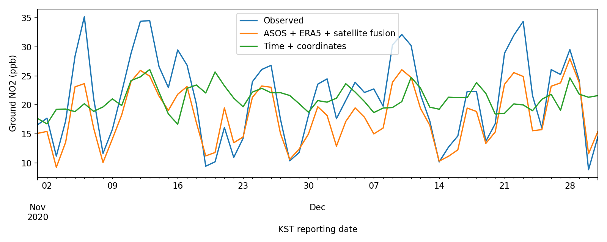
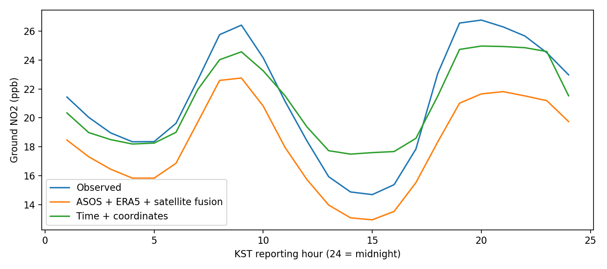
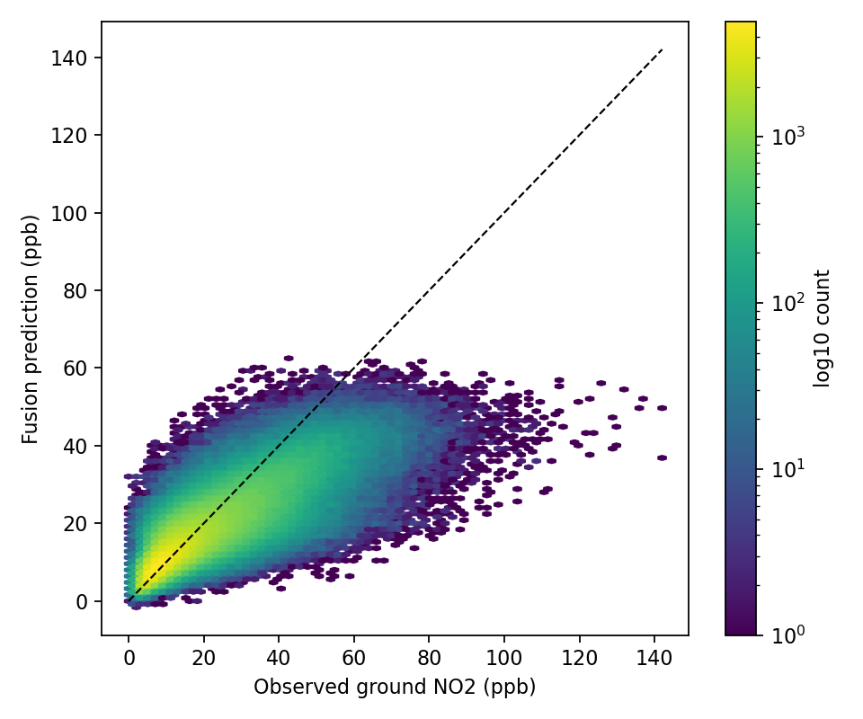
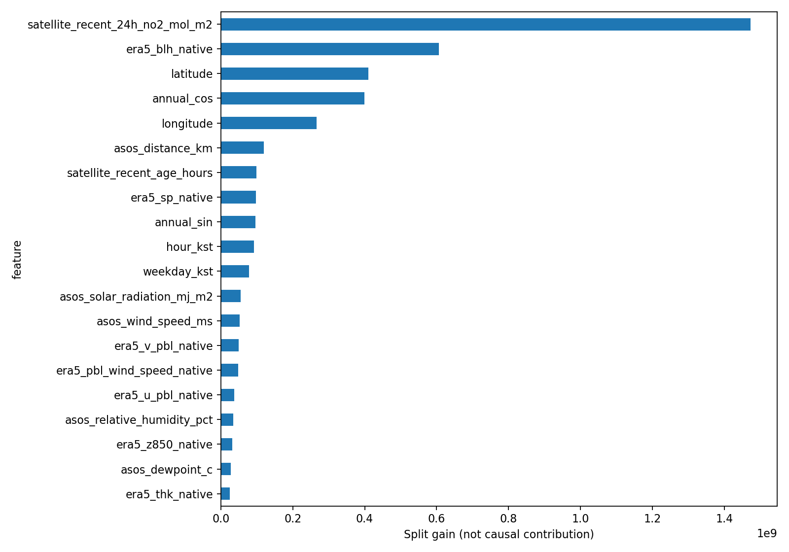
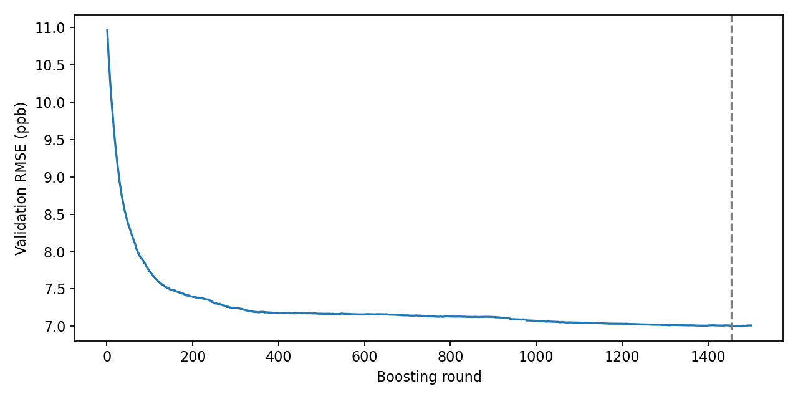

ASOS·ERA5·TROPOMI 모두 포함한 입력 38개, 선택 트리 1454개. 도시대기 실측 ppb 정답. 1–8월 학습 / 9–10월 검증 / 11–12월 평가.
| 모델 | RMSE ppb | MAE ppb | R² | 편향 ppb |
|---|---|---|---|---|
| 시간 | 14.051 | 11.293 | 0.054 | 1.129 |
| 시간 + 좌표 | 12.162 | 9.344 | 0.291 | -0.249 |
| 시간 + 좌표 + ASOS + ERA5 + 위성 | 9.454 | 6.577 | 0.572 | -3.136 |
시간+좌표 모델 대비 RMSE 22.27% 개선. 모든 요청 자료군이 실제 모델 분할에 사용됐는지 확인했습니다.
ERA5는 위치 bilinear 보간, ASOS는 최근접 지점 연결, 위성은 제공 노드·가중치로 집계한 값의 공간 보간입니다. 위성은 같은 hour-bin 및 과거 24h 최근값을 제공하며 미래값 backfill은 하지 않았습니다. 지상 정답은 보간하지 않았고 feature 결측은 NaN으로 유지했습니다.
현재 좌표는 요청대로 과거 이력 검증 없이 사용했습니다. 위성 원 화소 좌표·정확한 시각은 제공되지 않아 노드/hour-bin 대용 연결입니다. AirKorea 시간평균 구간은 독립 검증하지 않은 표기시각 기준입니다. ERA5 u_pbl/v_pbl은 10m 바람으로 해석하지 않습니다. 정확한 세부 처리 기준은 README.md와 data_metadata.json에 기록했습니다.





계절 영향이 섞인 단일 연도 시간 분리 평가입니다. 설계된 공간 독립 검증은 수행하지 않았으며 최종 공간 일반화 성능을 의미하지 않습니다. 중요도는 인과적 영향이나 자료군의 독립 추가 효과를 뜻하지 않습니다.